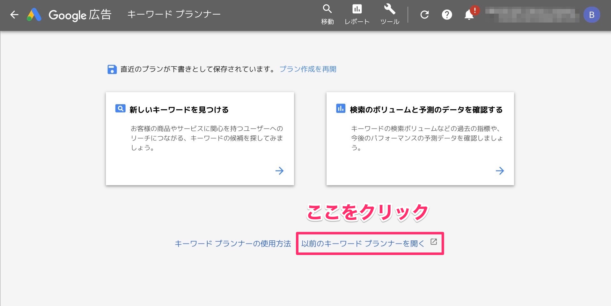

SEOキーワード選定する方法。具体的に５つの手順で解説します。

「よし、メディアを作ろう」と決めてサイト制作まで完了したあなたへ。
よくある話だと思います。
ロードマップなしで、死ぬまで記事を書き続けるのはキツイですよね…。かつ、走っている方向が間違っていたら…？いくら頑張っても結果がでない。そんな感じで運営停止しているメディアは山ほどあります。
というわけ今回は、SEOのキーワード選定についてまとめていきます。キーワード選定は５つのステップとなります。
キーワード選定ができれば、あとはスケジュールに落とすことでロードマップも完成します。手探りでメディア運営しているWeb担当者向け記事です。記事内容を自社メディアに適用すれば、効率的なメディア運営ができるようになるかと！
ステップ１．メディアが獲得を目指すキーワードを確定する

分かりやすくするために、下記の具体例に沿って書いていきます。
- 企業名：株式会社サクセス英語
- サービス名：わくわくオンライン英会話
- メディア名：わくわく英語 〜英語は楽しく学びましょう〜
株式会社サクセス英語は、わくわく英語というメディアを作りました。その目的は、わくわくオンライン英会話のユーザー獲得です。
メディアが獲得を目指すキーワードとは？
この場合は[オンライン英会話]というキーワードがターゲットです。[英語学習]といったキーワードを狙ってもいいですが、[オンライン英会話]と検索するユーザーの方が購入に近いので、まずはオンライン英会話から攻めていくべきです。
オンライン英会話で検索する人
オンライン英会話サービスを探している
英語学習で検索する人
英語を学びたい人。オンライン英会話を利用する可能性もあるが、参考書や英語の塾、もしくは留学する可能性もある。
ステップ２．キーワードプランナーでキーワード調査をする

キーワードプランナーにアクセスして、[オンライン 英会話]と打ち込みます。その際に、『入力したキーワードのみを含む』にチェックを入れておいてください。
更新情報：2018年10月20日

現在はキーワードプランナーがアップデートされておりますが、旧式にもアクセス可能です。この記事は「旧式のキーワードプランナー」を元にして解説しています。
実際に出てきたリストが下記です。

{kind=link}
入力したキーワードのみを含むとは？
『入力したキーワードのみを含む』にチェックを入れることで、[オンライン英会話]との掛け合わせキーワードのみを取得できます。ここにチェックをいれないと、下記のようなキーワードも出てきちゃいます。
- [英語学習]
- [英語学習 参考書]
後々はターゲットとして狙ってもいい記事ですが、入力したキーワードのみじゃないと量が多すぎて大変です。キーワードは細分化しつつ洗い出しましょう。
ステップ３．キーワード選定ツールで抽出したキーワードを分類していく
キーワード選定ツールはGoogleのキーワードプランナーを利用します。抽出したキーワードを徐々に分類していきます。最初の４件ほど、実際に分類してみました。

» 実際に出力されたキーワードリストを確認する
色がついている部分を一括りのキーワードとしてライティングをしてきます。
なお、エクセルのみでのキーワード整理でも良いですが、より詳細なキーワード整理をする場合はマインドマップを使うと便利です。
マインドマップを使ったキーワード整理方法
キーワードプランナーで抽出したキーワードをマインドマップツール（MindNode）にコピペします。その後に、キーワードをカテゴリ別に分類してきます。
ここの作業はかなり根気がいります。
キーワードをカテゴリ別に分ける際に、サブツールとしてkeysearch Betaがオススメ。keysearch Betaがざっくりのカテゴリ分けをしてくれるので、それをみつつ地道に、大量のキーワードの仕分け作業を行います。
SEO対策の最重要ポイントといっても過言ではない。
ここがSEOで最重要ポイントといっても過言ではありません。
とはいえ、ちょっとした慣れが必要なので、まずは完成形をみておくのも大切。なので、僕が実際に整理したキーワードリストを配布することにします。
整理したキーワードは[アフィリエイト]です。このキーワードリストから記事を書くことで、ざっくりアフィ報酬は月収60万円は目指せるのかなと。合計で３日の作業時間は８時間ほどかかりましたが、格安の5,000円で配布します。アフィリエイトのセルフバック(※)でも稼げる金額です。
» マインドマップの商品詳細を見る（購入ページに移動します）
※アフィリエイトのセルフバックが気になるなら、アフィＢといったサイトに登録してから、セルフバックという項目を探してみてください。無料の資料請求などをするだけで５〜10万は儲かりますよ。
更新情報：2018年4月29日
配布中のマインドマップの方法で、「アフィリエイト」のキーワードで10位圏内を獲得しました（4/29現在は5位）。また、アフィリ収益は予想通りで確定60万は越えそうです。
ステップ４．キーワードごとに想定読者と記事内容を考える

例えば、[オンライン英会話 比較]の場合で考えます。
- 想定読者：複数のオンライン英会話サービスを比較して、自分にあったサービスを探したい。
- 記事内容：複数のオンライン英会話サービスが簡単に比較できる情報を掲載する。
こんな感じで、想定読者を設定したあとに記事内容を考えていきます。すると、下記のようなタイトル案がでてきます。
- タイトル案：【保存版】オンライン英会話サービスの全社を徹底比較１００選
１００選とかだと文字数も多くなるので、SEOとしては強くなる傾向になります。こんな感じで記事を書いていけば上位をとれる可能性が高いです。
実際の検索結果はどうなっているのか？

オンライン英会話比較ナビの記事は、SEOガチガチですね。172社の比較って…笑。とはいえ、読者が欲している情報なんだと思います。尚、SEOで検索上位を獲得する記事の書き方は下記をご覧ください。
» SEOで検索上位を獲得する記事の書き方【記事設計からライティング】
ステップ５．ライティング中に必要と感じた『派生キーワード記事』を作成する
先程のオンライン英会話比較記事を例に考えます。
オンライン英会話比較記事では、料金の比較はもちろんですが、レビューの比較も重要だと思います。Amazonとかが良い例ですが、商品ページから口コミ・レビューに派生してますよね。
{kind=link}
つまり、DMM英会話のレビュー記事やレアジョブ英会話のレビュー記事の必要性が出てきます。これらも作成してきましょう。
{kind=link}
これを永遠と繰り返します。SEOつらたんです。SEO得意な友達は引きこもり系が多いのはこのせいかな？
基本的には、以上の５ステップとなります。オンライン英会話関連の記事がすべて完成したら、英語学習といったキーワードも狙っていきましょう。手順はすべて同じです。完成したキーワードリストをスケジュールに落としていけば、ロードマップも完成です。
番外編：SEOは陣取り合戦なので、ロングテールキーワードも狙っていく
SEOとは、陣取り合戦です。既存の検索ボリュームから、何％を獲得できるかの勝負です。つまり、いかに多くのキーワードで露出するかが大切。

上記のとおり。ロングテールSEOの詳細はロングテールSEOの基礎＋CVR理解【SEOマスターへの道のりを解説】をご覧ください。
ロングテールキーワード抽出の手順は次のとおりです。この方法だと、キーワードプランナーでは抽出できない細かいキーワードも拾っていけます。
- (1) ubersuggestにアクセスする
- (2) オンライン英会話と打ち込む。

上記のように50音順でロングテールキーワードを取得できます。
これも順次記事にしてきましょう。
注意点：キーワードプランナーで抽出した記事とは被らないようにすること
ロングテールキーワードをよく見るとわかりますが、キーワードプランナーで抽出した記事と一部被っています。こういったキーワードは削除しましょう。
ブロガーが記事を書き続けてもPVが伸びない原因がここにあります。下記はSEO基礎ですが、必ず守りましょう。
１キーワードに対して、１記事書く
むちゃくちゃに記事を書くと、１キーワードに対して、２記事とかになってしまいます。すると、Googleアルゴリズム的に、どちらかの記事順位が上がりづらくなるので、結果としてPVアップに繋がりづらいって訳です。ブロガーも辛いですね。
余談：10位と11位では、インプレッションが天と地の差になる
インプレッションとは記事の表示回数です。オンライン英会話比較で10位の記事が、月間で5000インプレッションだとすると、11位の記事は、月間で500回くらいのインプレッションになります。実際にデータをとるとだいたいこのくらいになることが分かります。
まとめ：SEOキーワード選定は簡単だけど、大変

SEOキーワード選定は簡単です。
記事の方法を使うとことで正しくキーワード選定ができるかと思います。
とはいえ、キーワード選定できていても記事のクオリティが低かったら意味がないですが…。このあたりは、キーワード順位チェックをしつつ最適化してきましょう。
以上となります。
わからない部分とかお気軽にお問い合わせください。
P.S：普段の僕は「Twitter」を軸に発信しています。また最近は「Webマーケ教材」の作成に注力しており、ネットで稼ぐスキルを学べます。ブログの更新通知は、Twitterでお知らせしていきます。